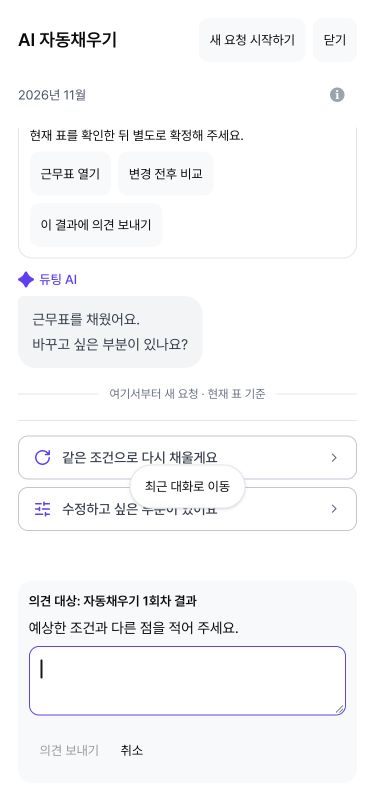

2026-10-18 · 웹 전용 · 기준 develop ca363418 · 브랜치 fix/schedule-journey-feedback
설계 판단은 구현 전 설계 문서에 기록했다. 원본 checkout은 변경하지 않고 전용 worktree에서 작업했다. 구현 후 origin/develop을 다시 확인했으며 기준 커밋과 동일해 추가 동기화 충돌은 없었다.
| 변경 전 | 변경 후 | 이유 |
|---|---|---|
| 공통 신고가 마지막 완료 실행을 자동 선택 | 각 완료/실패 결과의 신고 버튼과 작업 종류·회차 안내 | 이전 결과에 대한 의견이 다른 실행에 연결되지 않도록 한다. |
| 결과의 변경 규모 안내가 없음 | 계산된 변경 셀 수와 미반영 상태를 구분하고 별도 확정 안내 | 실행 당시 작성본, 이후 수동 편집, 최종 확정을 구분한다. |
| 신고 입력의 초점 관리가 없음 | 입력 시 초점 이동, 취소/전송 완료 후 원래 버튼 복귀, 전송 실패 시 입력 유지 | 키보드 위치와 작성 중인 의견을 보존한다. |
기존 서버 신고 계약과 schedule journey DISPLAYED/APPLIED/UNDONE 계약을 재사용했다. 일반 분석의 schedule_behavior에는 schema_version, service 및 고정 enum signal만 포함한다: comparison_open, regeneration_selected, outcome_recheck, feedback_open, feedback_sent. 입력/응답/이름/신고 원문/병동·실행 ID는 추가하지 않았다. SDK 또는 설정 조회 실패는 사용자 동작을 중단시키지 않는다. 행동 신호를 불만으로 분류하지 않는다.

성능·전환율 운영 기준선이 없어 상승을 주장하지 않는다. 배포 전후 같은 기간과 정의로 각 행동의 수/단계 도달 세션 수를 비교해야 한다. 단계 도달 분모가 없는 경우 클릭 수만 보고한다. 현재 enum 전용 분석으로 병동·교대 차이를 추정하지 않는다. 병동/교대별 분모·표본 수·신뢰구간은 권한 있는 서버 journey 집계가 필요하다. 반복 클릭, 재시도, 되돌림, 재생성은 네트워크 및 업무 과정의 신호일 수 있다.
실제 유료 LLM, 운영 부하/replay, 운영 analytics 수집 도착, 운영 신고 저장은 검증하지 않았다. 준비 이탈·해석 재시도의 서버 journey 이벤트 확대와 병동/교대별 분석 분모는 후속 계약 검토 대상이다. 이 PR은 그 이벤트를 구현했다고 주장하지 않는다. 미전송 신고 원문은 새로고침 시 복구하지 않으며, 기존 근무표/실행 복구 계약은 유지한다.
서버/DB 변경 의존성은 없다. 이 PR 커밋을 revert하면 기존 공통 신고 UI와 계측으로 돌아간다. 자동 merge, 운영 배포, 운영 DB 변경은 수행하지 않았다.